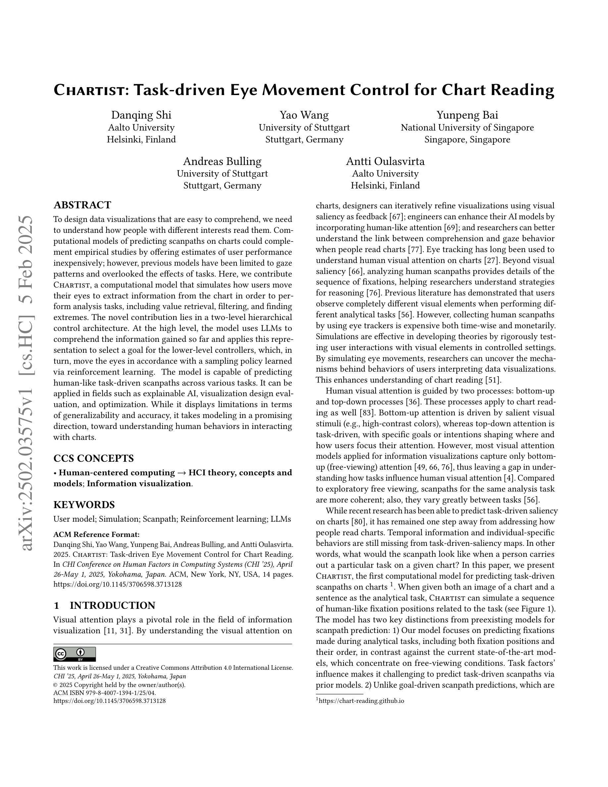
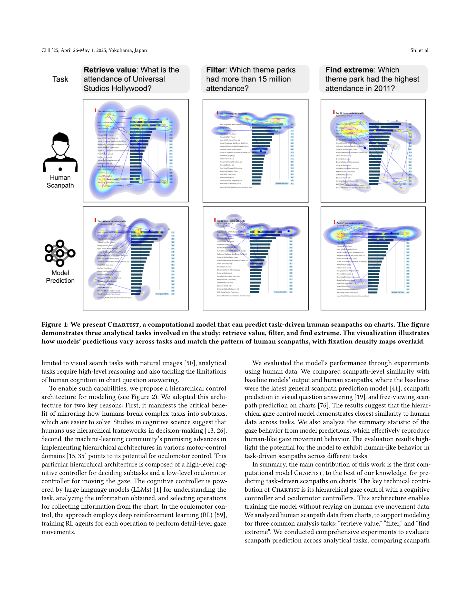
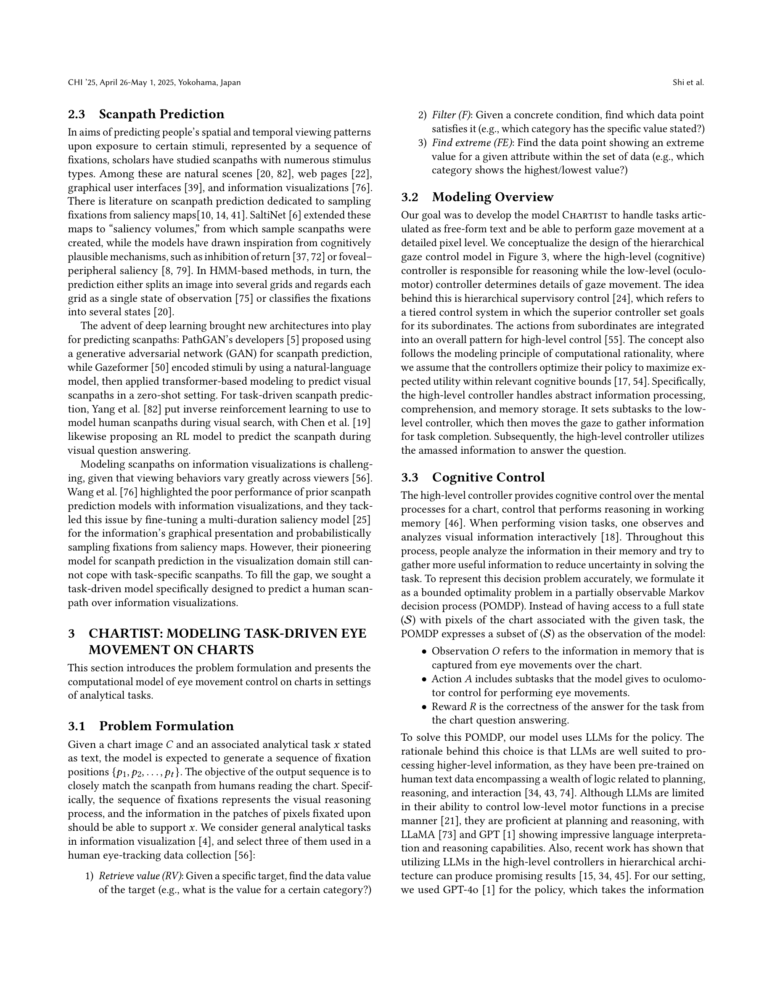
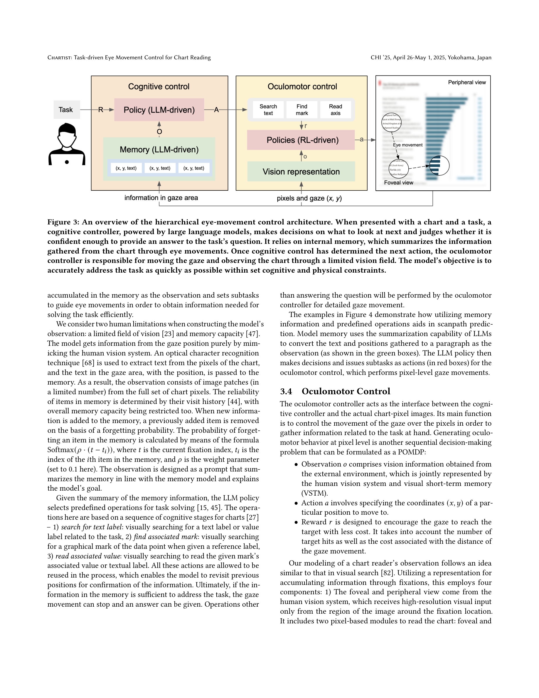
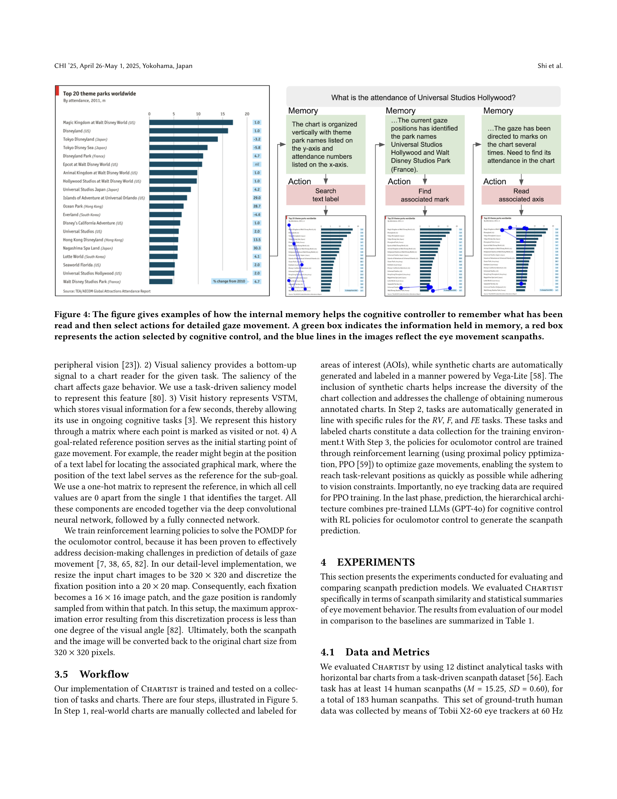

Figure 1
차트를 읽을 때 인간의 태스크 기반 시선 이동(scanpath)을 시뮬레이션하는 계산 모델 Chartist를 제안한다. 핵심은 2단계 계층적 제어 아키텍처로, 상위 레벨에서는 LLM이 지금까지 획득한 정보를 이해하고 다음 하위 목표를 선택하며, 하위 레벨에서는 강화학습(RL) 기반 정책이 실제 시선을 픽셀 수준에서 이동시킨다. 값 검색(Retrieve Value), 필터링(Filter), 극값 찾기(Find Extreme) 등 3가지 분석 태스크에서 인간과 유사한 scanpath를 예측하며, 기존 베이스라인(VQA, UMSS, DeepGaze III) 대비 Sequence Score와 Levenshtein 거리에서 최고 성능을 달성했다.

Figure 2

Figure 3

Figure 4

Figure 5
| 항목 | 점수 (1-10) | 비고 |
|---|---|---|
| 참신성 (Novelty) | 8 | 태스크 기반 차트 scanpath 예측이라는 새로운 문제 정의와 LLM+RL 계층적 아키텍처가 독창적 |
| 기술적 깊이 (Technical Depth) | 8 | 인지 컨트롤러, 안구 운동 컨트롤러, 메모리 모델 등 각 구성요소가 인지과학적 근거를 갖추고 정교하게 설계됨 |
| 실용성 (Practicality) | 7 | 시각화 디자인 평가/최적화에 직접 활용 가능하나, 현재 차트 유형과 태스크 범위가 제한적 |
| 완성도 (Completeness) | 7 | 정량적 평가가 충실하나, 고정 횟수 불일치와 제한된 차트/태스크 범위가 아쉬움 |
| 영향력 (Impact) | 7 | HCI, 정보 시각화, 인지 모델링 분야에 새로운 연구 방향을 제시하며, CHI 2025 발표로 가시성 높음 |
| 종합 (Overall) | 7.5 | 인지과학적 통찰과 최신 AI 기술(LLM+RL)을 결합한 창의적 연구. 차트 독해 과정의 계산적 이해에 의미 있는 기여를 하며, 향후 확장 가능성이 풍부함 |